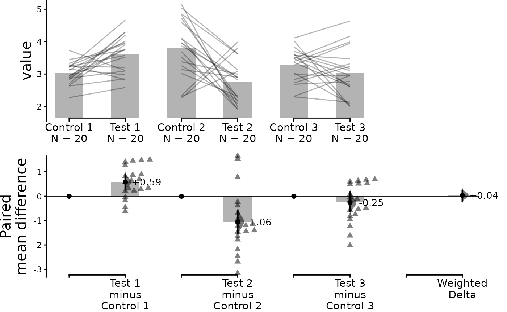

When scientists perform replicates of the same experiment, the effect
size of each replicate often varies, which complicates interpretation of
the results. This vignette documents how dabestr is able to
compute the meta-analyzed weighted effect size given multiple replicates
of the same experiment. This can help resolve differences between
replicates and simplify interpretation.
This function uses the generic inverse-variance method to calculate the effect size, as follows:
\[\theta_{weighted} = \frac{\sum{\hat{\theta_i}}w_i}{\sum{w_i}}\] where:
\[\hat{\theta_i}=\text{Mean difference for replicate } i\] \[w_i=\text{Weight for replicate } i = \frac{1}{s_i^2}\] \[s_i^2=\text{Pooled variance for replicate } i = \frac{(n_{test}-1)s_{test}^2 + (n_{control}-1)s_{control}^2} {n_{test}+n_{control}-2}\] \[n = \text{sample size and } s^2 = \text{variance for control/test}\] Note that this uses the fixed-effects model of meta-analysis, as opposed to the random-effects model; that is to say, all variation between the results of each replicate is assumed to be due solely to sampling error. We thus recommend that this function only be used for replications of the same experiment, i.e. situations where it can be safely assumed that each replicate estimates the same population mean \(\mu\).
DABEST can only compute weighted effect size for mean difference only, and not standardized measures such as Cohen’s d.
For more information on meta-analysis, please refer to Chapter 10 of the Cochrane handbook: https://training.cochrane.org/handbook/current/chapter-10
Create dataset for demo
set.seed(12345) # Fix the seed so the results are replicable.
# pop_size = 10000 # Size of each population.
N <- 20 # The number of samples taken from each population
# Create samples
c1 <- rnorm(N, mean = 3, sd = 0.4)
c2 <- rnorm(N, mean = 3.5, sd = 0.75)
c3 <- rnorm(N, mean = 3.25, sd = 0.4)
t1 <- rnorm(N, mean = 3.5, sd = 0.5)
t2 <- rnorm(N, mean = 2.5, sd = 0.6)
t3 <- rnorm(N, mean = 3, sd = 0.75)
# Add a `gender` column for coloring the data.
gender <- c(rep("Male", N / 2), rep("Female", N / 2))
# Add an `id` column for paired data plotting.
id <- 1:N
# Combine samples and gender into a DataFrame.
df <- tibble::tibble(
`Control 1` = c1, `Control 2` = c2, `Control 3` = c3,
`Test 1` = t1, `Test 2` = t2, `Test 3` = t3,
Gender = gender, ID = id
)
df <- df %>%
tidyr::gather(key = Group, value = Measurement, -ID, -Gender)We now have 3 Control and 3 Test groups, simulating 3 replicates of the same experiment. Our dataset also has a non-numerical column indicating gender, and another column indicating the identity of each observation.
This is known as a ‘long’ dataset. See this writeup for more details.
| Gender | ID | Group | Measurement |
|---|---|---|---|
| Male | 1 | Control 1 | 3.234211 |
| Male | 2 | Control 1 | 3.283786 |
| Male | 3 | Control 1 | 2.956279 |
| Male | 4 | Control 1 | 2.818601 |
| Male | 5 | Control 1 | 3.242355 |
| Male | 6 | Control 1 | 2.272818 |
Loading Data
Next, we load data as we would normally using load().
This time, however, we also specify the argument
minimeta = TRUE As we are loading three experiments’ worth
of data, idx is passed as a list of vectors, as
follows:
unpaired <- load(df,
x = Group, y = Measurement,
idx = list(
c("Control 1", "Test 1"),
c("Control 2", "Test 2"),
c("Control 3", "Test 3")
),
minimeta = TRUE
)When this dabest object is printed, it should show that
effect sizes will be calculated for each group, as well as the weighted
delta. Note once again that weighted delta will only be calculated for
mean difference.
print(unpaired)
#> DABESTR v2023.9.12
#> ==================
#>
#> Good afternoon!
#> The current time is 16:10 PM on Tuesday September 12, 2023.
#>
#> Effect size(s) with 95% confidence intervals will be computed for:
#> 1. Test 1 minus Control 1
#> 2. Test 2 minus Control 2
#> 3. Test 3 minus Control 3
#> 4. weighted delta (only for mean difference)
#>
#> 5000 resamples will be used to generate the effect size bootstraps.After applying the mean_diff() function to the
dabest object, you can view the mean differences for each
group as well as the weighted delta by printing the
dabest_effectsize_obj.
unpaired.mean_diff <- mean_diff(unpaired)
print(unpaired.mean_diff)
#> DABESTR v2023.9.12
#> ==================
#>
#> Good afternoon!
#> The current time is 16:10 PM on Tuesday September 12, 2023.
#>
#> The unpaired mean difference between Test 1 and Control 1 is 0.585 [95%CI 0.307, 0.869].
#> The p-value of the two-sided permutation t-test is 0.0022, calculated for legacy purposes only.
#>
#> The unpaired mean difference between Test 2 and Control 2 is -1.058 [95%CI -1.52, -0.577].
#> The p-value of the two-sided permutation t-test is 0.0001, calculated for legacy purposes only.
#>
#> The unpaired mean difference between Test 3 and Control 3 is -0.254 [95%CI -0.626, 0.169].
#> The p-value of the two-sided permutation t-test is 0.1081, calculated for legacy purposes only.
#>
#> 5000 bootstrap samples were taken; the confidence interval is bias-corrected and accelerated.
#> Any p-value reported is the probability of observing the effect size (or greater),
#> assuming the null hypothesis of zero difference is true.
#> For each p-value, 5000 reshuffles of the control and test labels were performed.You can view the details of each experiment by accessing
dabest_effectsize_obj$boot_results, as follows. This also
contains details of the weighted delta.
unpaired.mean_diff$boot_result
#> # A tibble: 4 × 11
#> control_group test_group bootstraps nboots bca_ci_low bca_ci_high pct_ci_low
#> <chr> <chr> <list> <int> <dbl> <dbl> <dbl>
#> 1 Control 1 Test 1 <dbl> 5000 0.307 0.869 0.302
#> 2 Control 2 Test 2 <dbl> 5000 -1.52 -0.577 -1.52
#> 3 Control 3 Test 3 <dbl> 5000 -0.626 0.169 -0.645
#> 4 Minimeta Overa… Minimeta … <dbl> 5000 -0.186 0.238 0.0355
#> # ℹ 4 more variables: pct_ci_high <dbl>, ci <dbl>, difference <dbl>,
#> # weight <dbl>Unpaired Data
Simply using the dabest_plot() function will produce a
Cumming estimation plot showing the data for each
experimental replicate as well as the calculated weighted delta.
dabest_plot(unpaired.mean_diff)
You can also hide the weighted delta by passing the argument
show_mini_meta = FALSE. In this case, the resulting graph
would be identical to a multiple two-groups plot:
dabest_plot(unpaired.mean_diff, show_mini_meta = FALSE)
Paired Data
The tutorial up to this point has dealt with unpaired data. If your
data is paired data, the process for loading, plotting and accessing the
data is the same as for unpaired data, except the argument
paired = "sequential" or paired = "baseline"
and an appropriate id_col are passed during the
load() step, as follows:
paired.mean_diff <- load(df,
x = Group, y = Measurement,
idx = list(
c("Control 1", "Test 1"),
c("Control 2", "Test 2"),
c("Control 3", "Test 3")
),
paired = "baseline", id_col = ID,
minimeta = TRUE
) %>%
mean_diff()
dabest_plot(paired.mean_diff, raw_marker_size = 0.5, raw_marker_alpha = 0.3)